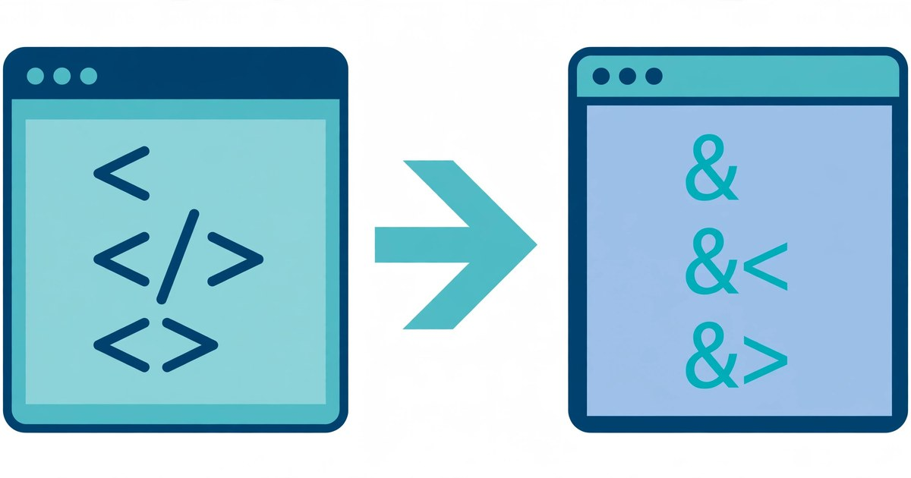

How to Encode and Decode HTML Online
Turn raw HTML into safe, displayable code — and turn entity codes back into real characters. Free, no signup, right in your browser.
November 5, 2026 · 6 min read

To encode or decode HTML online, open ToolsHub's HTML Encoder/Decoder, paste your HTML or text, and click Escape to encode it or Unescape to decode it. That is the whole process: no signup, no download, and nothing you paste leaves your browser.
A browser reads < and > as tag markers and & as the start of an entity, so a pasted snippet may run, hide, or mangle instead of showing. Encoding swaps each special character for a harmless code the browser displays as plain text, so readers see exactly what you typed.
What the HTML Encoder/Decoder does
The tool has two boxes: HTML or text at the top and Result below it. Paste code in the top box, click Escape to encode or Unescape to decode, and use the reference table below to look up any character's named and numeric forms.
The rule is simple: each special character becomes an entity starting with an ampersand and ending with a semicolon — < becomes <, > becomes >, and & becomes &. Letters, digits and spaces are left alone, so most of an encoded snippet still reads like the original.
Encode or decode HTML in 5 steps
- Open the HTML Encoder/Decoder and find the two boxes: HTML or text at the top, and Result below it.
- Paste your HTML or text into the top box. For encoding, paste the code you want displayed as text. For decoding, paste text full of entity codes.
- Click Escape or Unescape. Escape converts special characters into entities; Unescape converts entities back into real characters.
- Check the Result box before you use it. One glance catches a double-encoded &lt; or a missing semicolon.
- Copy the result into your page, comment, or document. Paste it as plain text, and the browser will display the code instead of running it.
A worked example: what encoding does to real code
Start small: <div> is 5 characters. Encoded, it is <div> — 11 characters, because each angle bracket becomes a 4-character code while the three letters stay unchanged.
Now a full line: <p>Hello & goodbye</p>. Count it: 22 characters. Encoded, it is 38: each angle bracket becomes a 4-character code and the ampersand becomes the 5-character &. The words Hello and goodbye are untouched — encoding protects the structure while leaving readable text alone.
A shorter case shows the ampersand rule clearly. The phrase "a & b" is 7 characters: two quote marks, two letters, two spaces, and one ampersand. Encoded, it is 21 characters — each quote mark becomes the 6-character " and the ampersand becomes the 5-character &, while the letters and spaces stay as they are (6 + 1 + 1 + 5 + 1 + 1 + 6 = 21).
| Character | Named entity | Numeric entity | Why it matters |
|---|---|---|---|
| & | & | & | Starts every entity — must be escaped first |
| < | < | < | Starts a tag — must not appear raw in displayed code |
| > | > | > | Ends a tag — must not appear raw in displayed code |
| " | " | " | Ends an attribute value in quoted attributes |
| ' | — (numeric only) | ' or ' | The tool's table gives numeric forms, not a named entity |
| Non-breaking space | |   | A space that will not collapse or break the line |
| © | © | © | Copyright symbol, 1 character to a 6-character code |
| € | € | € | Euro sign, 1 character to a 6-character named code |
| — | — | — | Em dash, 1 character to a 7-character code |
Named entities read more clearly, while numeric entities need no name remembered — both display the same way.
A worked example: decoding, and the double-encoding trap
Decoding is the reverse trip. Paste <div> and click Unescape, and you are back to <div> — 11 characters shrink to 5, because each 4-character code collapses into a single character.
The classic mistake is encoding twice. Encode < once and you get < (4 characters). Encode that result again and the ampersand at the front is itself encoded, giving &lt; — 8 characters — which a browser displays literally as < instead of as <. If your page shows an entity code instead of the character you wanted, it has almost certainly been through the process one time too many: unescape once and check.
HTML encoding, URL encoding, or Base64: which one do you need?
| Tool | What it changes | Use it when |
|---|---|---|
| HTML Encoder/Decoder (this tool) | Special characters into entities | Showing code safely inside a web page |
| URL Encoder/Decoder | Unsafe characters into % codes | Making a value safe inside a link |
| Base64 Encoder/Decoder | Any data into letters, digits, + and / | Embedding data in text, email or code |
| Slug Generator | A title into a short hyphenated address | Choosing the readable part of a page URL |
Match the tool to the destination: a page needs HTML encoding, a link needs URL encoding, and data in transit needs Base64.
5 mistakes that corrupt displayed code
- Encoding only the angle brackets and forgetting the ampersand. An unencoded & in front of text can be read as the start of an entity. Encode the ampersand first, or use the tool, which handles all three together.
- Encoding twice. A character encoded once is <; encoded again it becomes &lt;, which displays as the code itself. If your page shows an entity code, unescape once and check.
- Dropping the semicolon. An entity without its closing semicolon, such as <, is not a complete code and may display as plain text. Every entity ends with a semicolon.
- Decoding code you meant to display. Clicking Unescape on a snippet you wanted to show as text turns it back into live markup. Encode for display, decode only when you want the real characters back for editing.
- Hand-typing entities instead of using the tool. A single wrong digit in a numeric entity, such as © typed as Ä, silently shows a different character. Let the tool generate the codes and copy the result.
Frequently asked questions
What does HTML encoding actually change?
It replaces characters that have a special meaning in HTML, such as <, > and &, with entity codes like <, > and &. The browser then shows the character as text instead of treating it as part of the page structure.
When should I encode HTML instead of just pasting code?
Whenever code must appear as visible text on a page, in a comment, in documentation, or inside a message. Pasting raw code lets the browser run or hide it; encoding it makes the browser display it exactly as written.
Why does my text show &lt; instead of <?
Because it was encoded twice. The first pass turned < into <, and the second pass encoded the ampersand itself into &, giving &lt;. Unescape once and you are back to <; unescape again and you are back to <.
Is anything I paste sent to a server?
No. The HTML Encoder/Decoder runs entirely in your browser, and its page states that your code is never uploaded anywhere.
Related tools: HTML Encoder/Decoder · URL Encoder/Decoder · Base64 Encoder/Decoder · Slug Generator · Markdown to HTML